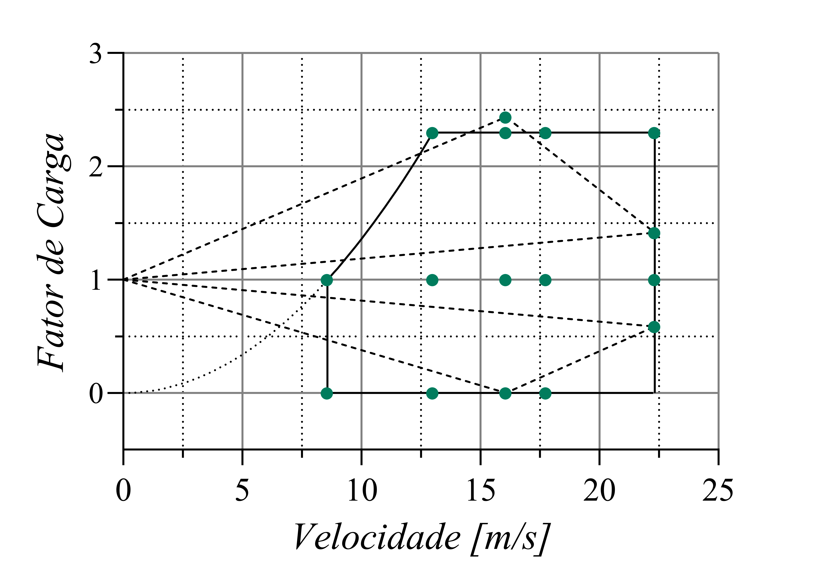

Harpia Aerodesign
1. Escopo e Desafio Técnico
Na competição Aerodesign, o principal desafio é projetar uma aeronave cargueira radio-controlada com a maior eficiência estrutural possível (carregar o máximo de peso com o menor peso estrutural próprio). Dentro da equipe, a coordenação de Cargas e Aeroelasticidade atua na interface crítica entre a aerodinâmica e o dimensionamento estrutural.
A responsabilidade da área envolve mapear todas as forças que atuam no avião durante as fases críticas de voo (decolagem, curvas de alta carga g, rajadas de vento e pouso) e garantir que a estrutura não falhe catastroficamente devido a fenômenos estáticos e dinâmicos.
2. Metodologia de Análise
O trabalho foi estruturado com base em rotinas automatizadas e simulações numéricas para prever o comportamento da aeronave antes da fabricação do protótipo físico:
Construção do Diagrama V-n: Utilizando scripts em Python e MATLAB, foram mapeados os limites operacionais da aeronave cruzando velocidade de voo e fator de carga (g), seguindo os critérios de segurança baseados no regulamento RBAC 23.
Análise de Aeroelasticidade (Flutter): Através do acoplamento entre as forças aerodinâmicas e a rigidez estrutural no Siemens Femap/Nastran, realizamos análises de modos de vibração e extração das velocidades críticas de divergência e flutter, guaranteeing que o avião opere em uma zona aeroelasticamente estável.

.jpg)
3. Resultados Alcançados
A automação do cálculo de distribuição de sustentação na asa permitiu que a equipe de estruturas refinasse as longarinas e nervuras com coeficientes de segurança otimizados, resultando em uma redução significativa no peso vazio da aeronave. Na pista, esse rigor técnico se traduziu em uma trajetória histórica de crescimento e conquistas consecutivas para a equipe:
🏆 2023 (Nacional): Consolidação do trabalho de engenharia com a conquista do 4º lugar geral na competição SAE Brasil Aerodesign, garantindo o primeiro troféu da história da equipe.
✈️ 2024 (Nacional & Internacional): Bicampeonato no pódio nacional com mais um 4º lugar geral, carimbando a vaga inédita para representar o Brasil no cenário internacional. Na competição da SAE International, realizada na Califórnia (EUA), a equipe disputou com as maiores universidades do mundo e conquistou uma histórica 7ª posição mundial.